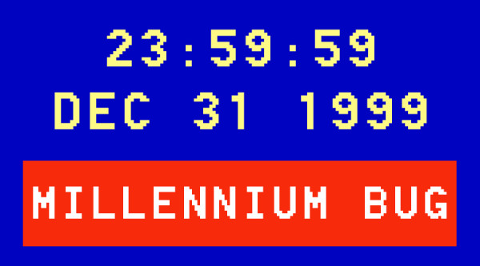

DIV ANNIDATI
ARIANE 5
370 milioni di dollari
Il lancio inaugurale del razzo Ariane 5 dell'Agenzia Spaziale Europea fallì a causa di un bug nel software.
Il sistema di navigazione riutilizzava codice dall'Ariane 4,
che non era stato adattato ai cambiamenti delle prestazioni del nuovo razzo.
Ciò provocò un errore di overflow in una conversione di un numero a virgola mobile.
Il razzo deviò dalla sua rotta e fu distrutto.
Perdita di un razzo da 370 milioni di dollari e di carichi utili scientifici di alto valore.
MARS CLIMATE ORBITER
Circa 193 milioni di dollari
errore si verificò perché il software che controllava il sistema di navigazione del Mars Climate Orbiter
utilizzava unità imperiali (libbre-forza secondi) invece di unità metriche (newton secondi).
La sonda entrò nell'atmosfera di Marte troppo bassa e fu distrutta.
Perdita della sonda spaziale e della missione.

KNIGHT CAPITAL
Circa 440 milioni di dollari in 45 minuti
Knight Capital, una grande società di trading finanziario,
installò un aggiornamento del software difettoso su uno dei suoi server.
Questo software iniziò a fare milioni di operazioni di borsa errate, facendo crollare il prezzo delle azioni.
L'azienda perse circa 440 milioni di dollari in meno di un'ora e fu successivamente acquisita.
Perdita finanziaria enorme e fine dell'azienda come entità indipendente.
THERAC-25
Diverse vite umane
Therac-25 era una macchina per la radioterapia utilizzata negli ospedali.
A causa di bug nel software, in alcune circostanze la macchina somministrava dosi di radiazioni letali ai pazienti.
Il bug si manifestava solo in determinate sequenze operative, quindi non fu scoperto subito.
Almeno 5 persone morirono e molte altre subirono gravi lesioni a causa di sovraesposizione alle radiazioni.

PATRIOT MISSILE
Perdita di vite e milioni di dollari
Un errore di arrotondamento in un sistema di temporizzazione del software del
Patriot Missile causò il fallimento dell'intercettazione di un missile Scud iracheno.
Il missile colpì una caserma dell'esercito statunitense, uccidendo 28 soldati.
Perdita di vite umane e di fiducia nella tecnologia di difesa.

MILLENNIUM BUG
Circa 100 miliardi di dollari in preparazione e mitigazione
Sebbene non ci sia stata una grande catastrofe,
il "Millennium Bug" ha richiesto investimenti massicci per evitare il collasso dei sistemi informatici.
Il bug era causato dal fatto che molti software utilizzavano solo le ultime due cifre dell'anno (es. '99 per 1999),
il che poteva portare a malfunzionamenti passando all'anno 2000.
Anche se il bug non causò gravi danni, il costo per la prevenzione fu enorme.

BUG INTEL
Circa 475 milioni di dollari
Un bug nei processori Intel Pentium causava errori di calcolo nelle divisioni in virgola mobile.
Questo difetto divenne un problema di pubbliche relazioni per Intel dopo che gli scienziati iniziarono a notare discrepanze nei loro calcoli.
Intel alla fine dovette ritirare i processori difettosi e rimborsare i clienti.
Costi enormi di sostituzione e danno alla reputazione di Intel.
TESLA MODEL S
Perdita di un'auto
Un aggiornamento del software del Tesla Model S causò il blocco dei freni a mano di alcune auto.
In un caso, questo portò all'incendio e alla perdita completa di un'auto.
Danni materiali e possibili rischi per la sicurezza.

AT&T
Decine di milioni di dollari
Un aggiornamento software difettoso nel sistema di commutazione di AT&T portò a un blocco che durò circa 9 ore.
Durante questo periodo, milioni di chiamate telefoniche furono interrotte negli Stati Uniti.
Danno alla reputazione e perdite finanziarie per AT&T, oltre a disagio per milioni di utenti.
BOEING 737 MAX
Oltre 20 miliardi di dollari, molte vite perse
Il sistema MCAS (Maneuvering Characteristics Augmentation System) del Boeing 737 Max,
progettato per correggere il comportamento di volo dell'aereo, aveva un bug che portava a una serie di incidenti aerei mortali.
Questo errore portò alla perdita di controllo degli aerei in determinate situazioni,
causando due incidenti fatali che uccisero 346 persone.
La Boeing subì gravi perdite economiche, danni alla reputazione e costi enormi per riparare il software e certificare nuovamente il modello.
L'aereo fu bloccato a terra per quasi due anni.